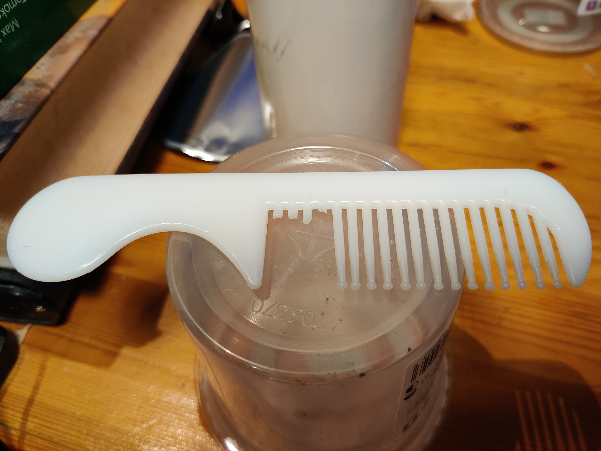
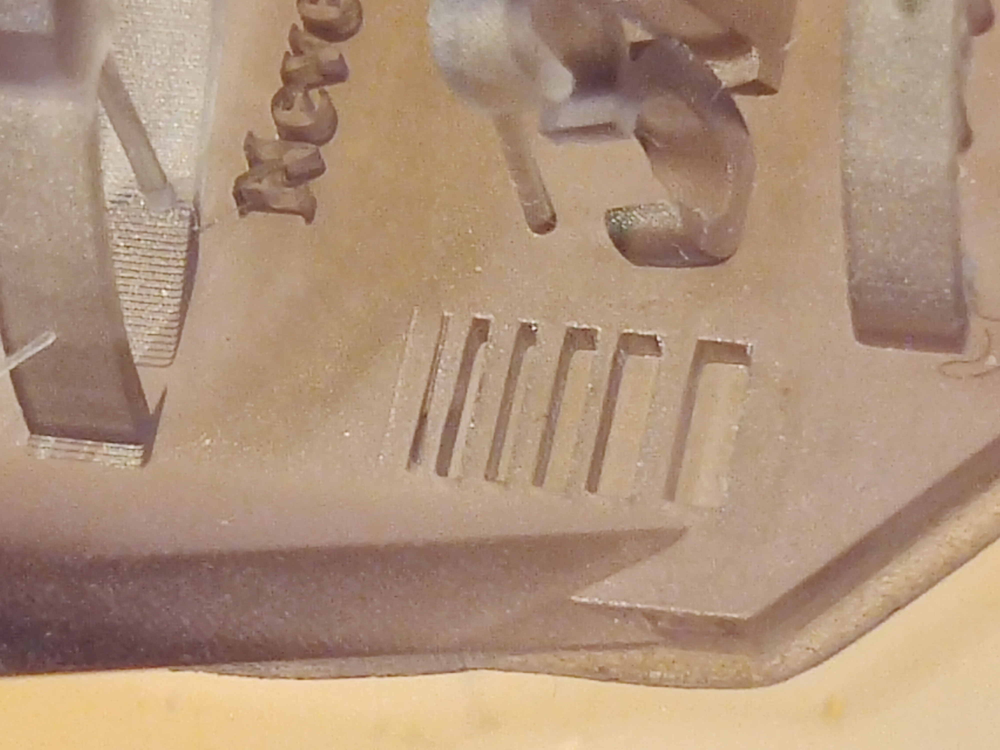
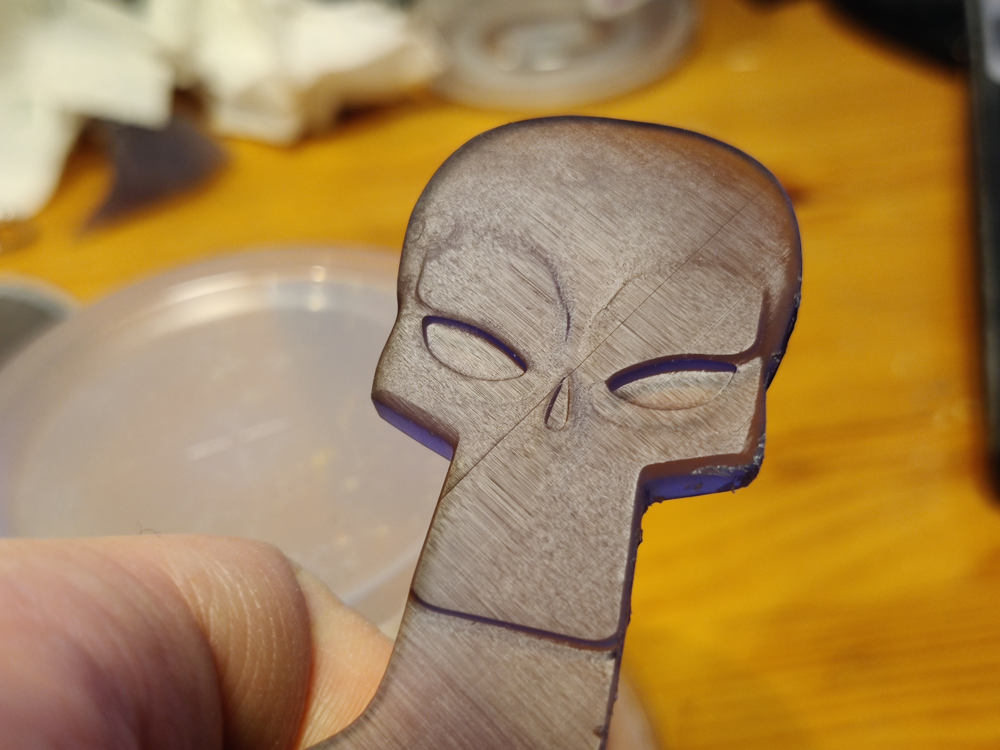
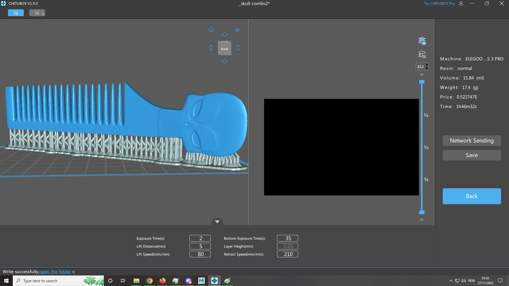

Prosjekt 1 (Oppgave2)
3D Printing (i Resin med Elegoo Mars 3 Pro!)
En liten recap fra info om meg: Jeg er en IT student som vil spesialiserer innen 3d, som allerede har 3d printet i emnet "Skisser og Prototyper"( og på 3d printing kurs), og jeg er interessert i brettspill som bruker miniatyrer.
Med vanlige PLA printere kan man printe overaskende detljerte byster og større sculpts, men det blir noe mangel på mindre detaljer. Miniatyr figurer blir derimot så små at de mangler finere detaljer, hvertfall hvis man sammenligner de med figurer laget med "injection molding" -som er industristandaren for miniatyrer brukt til wargaming og TRPG's som DnD.
Den naturlige løsningen på en printer med dette bruksområdet er Resin printere, så dette var noe jeg hadde planlagt å kjøpe meg i år uansett. Men hvis jeg først skulle det så hadde det jo vært en bortkastet mulighet å ikke bruke den til denne oppgaven!
Dette er lettere sagt en gjort dog, ettersom resin generelt sett er ganske mye svakere en typisk PLA plastikk -og temaet til denne oppgaven er funksjonalitet. I liten nok skala fungerer resin helt fint til diverse bokser og esker, men jeg ville fremdeles prøve å gjøre noe nytt med oppgaven. Jeg har allerede printet nok (2 stykk)rasberry Pi cases, og diverse andre ting i Skisser og Prototyper, så nå som jeg har sjansen vil jeg hellet teste grensene litt for hva en kan gjøre med resin som materiale.
Jeg hadde heller ikke lyst til å printe noe bare for oppgavens skyld, det beste hadde vært om jeg kunne printe noe jeg faktisk trengte. Noe jeg bruker dagligdags som må tale en del bruk hadde vært en idiell oppgave og test av den nye printeren min.
Og det var noe jeg trengte!

Dette er en gammel kam jeg fikk "gratis" fra et hotell i hellas for nesten 10 år siden. Den er det eneste jeg har brukt til å gre håret i nesten 10 år, og det har holdt ut helt til i høst hvor den endelig mistet tenner.
Det slo meg jo at jeg trengte en ny kam, men grunnen til at jeg valgte oppgaven var også for å teste styrket til resin som materiale. Tennene på en kam må tåle motstand, og selve kammen må kunne overleve å ligge i bukselommer og toalett mapper.
Hvis en resin-printet kam altså ikke overlever dette så er det ikke mye vits i å bruke noe annen en "engineering resin" til å printe annet en kunst.
Målet med min oppgave er altså å lage en fungerende kam, og teste detailje nivået til en resin printer.
Resin Skull Comb
Dette er arbeidsfilene til kammen jeg faktisk printet ut, ikke den forbedrede versjonen.
Last ned Chitubox FilLast ned Maya Arbeidsfil
Last ned kammen som OBJ-fil
Set up/Hvordan fungerer Resin printing?
Onsdag 16 November kom endelig bestillingen min frem. Jeg hadde kjøpt en Elegoo Mars 3 Pro, en Elegoo Mercury Plus Washing and Curing Station, 1 liter Siraya Tech Fast ABS-Like "Smoky Black" Resin, og noen reserve FEP films til printeren.

Resin er ekstremt giftig, til den grad at man helst skal ha på seg maske og handsker når man håndterer det direkte. Dette er fordi vesken er såpass reaktiv at den vil forsøke å binde seg til og forandre de fleste molykyler den kommer i kontakt med. Som en veske han det lage såkalte "fumes" eller fordampe, og denne gassen er også giftig.
Slik resin for 3d printing fungerer er at resinen har egne designede molekyl lenker for forskjellige kvaliteter(som styrke, fleksibilitet, små presise detailjer osv) og er ellers bygget opp av fargestoffer, fillers (for strukturell integritet) og "reactors" som er stoffer som reagerer på UV-lys.
Disse "reactor" molekylene splittes når de blir troffet av UV lys, og de resterende molekylende binder seg i alle de løse endenene til Resin molekyl-lenkene. Der resinen har blit truffet av UV lys stivner da til en helt ufarlig solid masse.
En Resin rpinter bruker en skjerm til å lyse opp "layerene" til en splicet fil som ett og ett bilde. Dette gjør bunnlaget til resin tanken i printeren solid, og med riktig eksponerings instillinger fil laget binde deg til build-platen istedet for "FEP filmen" og er i bunnen av resin tanken -over skjermen. Printeren begynner så en drakamp med "FEP-filemn" til resin tanken, og heiser build-platen opp. Så forstivner den neste lag me dresin.
Det gjenstår så etterpå å vaske av den flytende resinen som har lagt seg oppå den forstivnede resin modellen i alkohol, og deretter "kureres" resin modellen helt solid under en UV lampe. Denneresterende delen er det "washing and Curing-station" er til for.
Printer Setup og Test Print
Ett av de største ssalgspunktene til Elegoo Mars 3 Pro er at den markedsfører seg som en "plug and print" printer, så det eneste setupen du trenger å gjøre på selve årinteren er å "levle build-platen". Dette tar ikke 2 minutter en gang når man vet hva man gjør, men jeg ble ganske forvirret av bruksamvisningen printeren kom med. Aelve prosessen gpr ut på å legge et ark under buildplaten, og la den finne "home" (altså bunnen av z-aksen), og deretter justere høyden på platen manuelt til den grad at det er trangt å dra ut arket -men platen skal gi slipp.
Etter litt googeling forsvant bekymringene mine, og jeg bestemte meg for å prøve test printen som kom med en minnepinne. Dette er de typiske tårnene, eller "rooks" test-printene som finnes på PLA prinntere også
Disse printet så og si perfekt, til toss for at de ikke var slicet med instillinger som var kalibrert for min resin.

Å kalibrere en slicet fil med riktig resin instillinger er å justere eksponeringstiden til UV-lyset som blir brukt til å stivne lagene til printen, og å justere kraften build-platen beveger seg på etter hvor sterk resinen er. Hvis man overeksponerer en model mister mann detaljer, ettersom de forslkjellige layerene utvider seg til større dimensjoner enn 3d modellen er laget for. Jeg er litt usikker på hvorfor dette skjer, men det ser ut som dette er fordi SLA resin pintere bruker tradisjonelle LED-skjermer som "blør lys" utover i resinen. DLA printere bruker prosjektorer som prosjekterer lys mye mer presist.
Kallibrering/Eksponerings Test
Etter et søk på internett fant jeg en offisiell liste av Elegoo på slicer instillinger for alle Elegoo's printere, og masse resins. Desverre gjorde jeg den første testen feil, ettersom jeg valgte instillingene til Elegoo Mars 1, isteden for 3 pro.
Her har vi da altså et eksempel på overeksponering:
Alle detaljene her er forskjellige tester for resin-kalibrering, men jeg vil fokusere på eksponeringen her. Det andre bildet viser en rekke firkantede groper som printes fra tykkelsen 0.9mm til 0.1mm, og dette er en typisk eksponerings test. Jo flere man greier å printe helt firkantet jo bedre er eksponeringsinstillingene til printeren. Her har jeg altså overeksponert, men jeg har et enda bedre eksempel også:

På toppen av buegangen smelter den halvsirklede buen inn i stjernen, og de små stolpene med ringer på smelter også sammen. Radene med pillarer på siden har også smeltet sammen.
Jeg fant ut at jeg hadde brukt feil instillinger etter en god del grubling og spørring på nett, og testet så de annbefalte instillingene:

Eksponerings testen var ikke helt perfekt, men her har ingen andre detaljer smeltet sammen. Jeg fant noen andre sine personlige instillinger for samme resin som meg på samme printer, og bestemte mg for å bruke disse på selve oppgaven
3d Kam til oppgaven
I 3d-modellerings emne lagde jeg en low-poly "skull-guitar", og til kammen i denne oppgaven bestemte jeg meg for å prøve å gjøre den til et high-poly håndtak.

Å smoothe en organisk mesh er lettere sagt en gjort, ettersom alle harde kanter vil forsvinne hvis man ikke definerer dem med tett-pakket geometri. Jeg tok altså utgangspunktet i denne guitar "kroppen" fra oppgaven min, og brukte til på å forsterke de harde linjene på skallen slik at de skulle overleve smoothing-prosessen.
Etter å ha testet smoothingen og justert modellen flere ganger begynte jeg på kammen. Hvis du har et godt øye ser du en del justering i geometrien for å ivareta utrykket til hodeskallen. Jeg statte så måleenhetene i Maya til millimeter, og lagde en boks på størrelse med min gamle kam for sammenligning.
Det endelige resultetet smoothet ser slik ut:
Deretter hoppet jeg over i Chitubox, som er en av resinprinterenes mest vanlige slicer software. Gratis versjonen fulgte med printeren min, så jeg forsølte å lære meg å sette supports til modellen her. Men jeg kom over et problem. Kammen min var for lang for build-platen min på langs, så for mitt første forsøk satte jeg kammen på skrått oppover. Dette var en veldig kortsynt av med i retrospekt, dog mere om dette senere.
Denne pinten er estimert av chitubox til å ta 4 timer og 10 minutter... Oh boy, tok det mye lengre tid en det. Etter printeren hadde gått i en time la jeg merke til at jeg kunne ha lagt modellen vanrett DIAGONALT over build-platen.. Og estimeringen på printe tiden her var på under 2 timer! Fra dette tidspunktet behandlet jeg den første 3d-rpinten som en test-print, og stålsatte meg selv for at dette hadde mye større sjanse for å gå galt.
Etter 4 timer var printen 78% ferdig, men printeren begynte å lage en mysterisk lyd. Hver gang build-platen skulle ned i resin tanken begynte printeren å piipe, noen som google fortalte meg at var fordi den treffer bunnen av tanken før den er ment å gjøre det. Dette skremte meg litt så jeg stoppet printeren.
Når man stopper printen trekker build-platen seg opp og dette ga meg en sjanse til å inspisere printen. Jeg kunne ikke se noe galt med de nederste lagene den holdt på å printe, men jeg la merke til at "ryggraden" til kammen som tennene kommer ut av var mye tynnere i virkeligheten enn jeg hadde forestilt meg i Maya. Derfor satte jeg med ned å lagde en versjon 2 av kammen, med videre rygg og kortere tener. Etter jeg fortsatte printen sluttet den å piipe, og printet vidre resten av modellen. Og endelig ble kammen ferdig....
Ingen tydlige problemer synlige, men den har en inperfeksjon som ble tydelig når man ser litt nermere på den.

Midt i hodeskallen er det en VELDIG tydlig layer linje, som ble laget da leg stoppet printen på 78%. Jeg tok også av supportene på en amatørmessig måte, så den tynne siden av ryggraden til kammen trenger litt sandpussing. Jeg har siden lært at hvis man vasker modellen i varmt vann blir supportene så svake at de popper rett av, istedet for å måtte klippe de av slik jeg gjorde.
Så er jo spørsmålet: Fungerer denne kammen, med den tynne ryggen jeg var så redd for?
Svaret er JA! Uten problemer! Jeg kan være ganske hardhent med kammen uten at den gir tegn til å bli ødelagt. Den er mer fleksibel enn den gamle plastikk kammen min hvis jeg prøver å bøye den, men det tåler minst like mye om ikke mer. Når jeg skriver dette har jeg brukt den i et døgn, og selv om jeg gjørs på å sette meg på den når den er i bukselomma osv så tåler den alt.
Til neste gang: Jeg vil prøve anti-aliasing for å minske synligheten til layer-linjene på modellen. De er også mer synlige pga den gjennomsiktige resinen jeg har brukt. Har også i ettertid skjønt at den "forbedrede versjonen" har for mange supports. Den jeg printet ut hadde ca 30% mindre supports og ble printet uten problemer.
Jeg endte altså ikke opp med å printe den "forbedrede versjonen" av kammen, men kan godt legge med den også som vedlegg.

Den "forbedrede" u-printa versjonen av kammen
Last ned Chitubox Fil
Last ned Maya Arbeidsfil
Last ned kammen som OBJ-fil